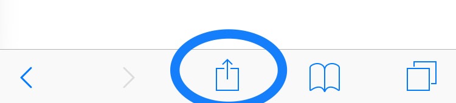
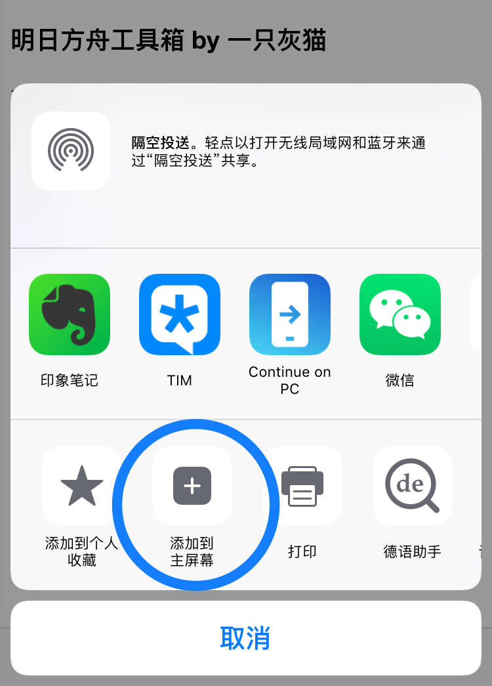
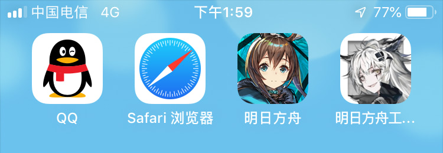
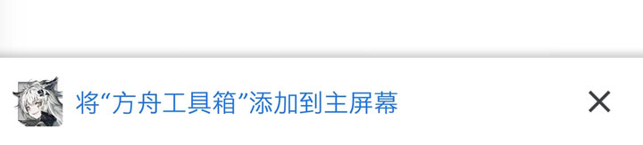
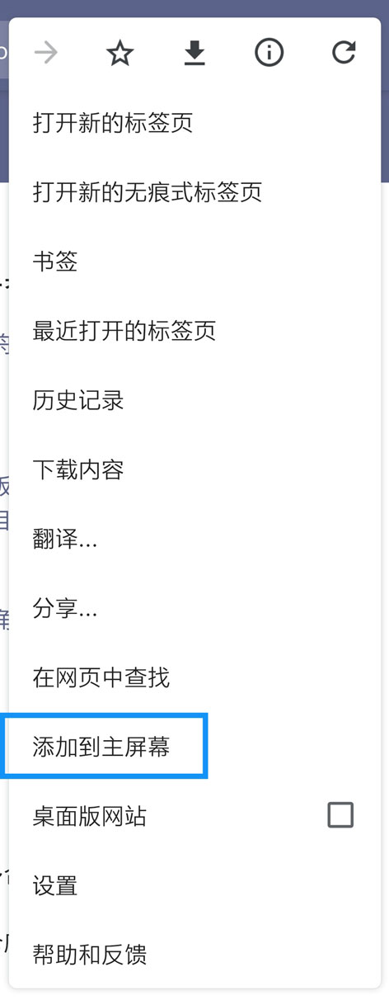
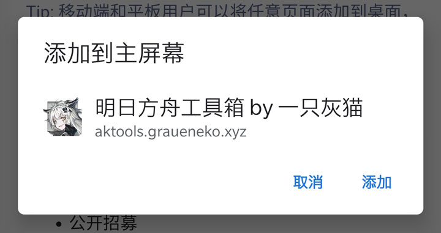
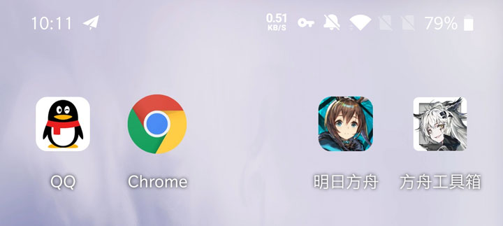

右上角图标根据浏览器不同可能会有不同的显示，但每个位置功能相同：
依次为：复制或分享，更新，帮助，清空
本工具箱以移动设备优先，添加到主屏幕后可以获得原生App体验：
首次加载后，后续使用加载飞快，可以离线使用，自动更新。
1. 使用Safari浏览器打开本站任意页面；
2. 点击底部分享按钮；
3. 选择“添加到主屏幕”；

4. 若图标未加载出来，请稍等或者稍后重试；
5. 现在可以在主屏幕使用，无需安装。
1. 使用Chrome浏览器打开本站任意页面；
2. 点击底部添加按钮；
3. 若按钮未加载出来，可以到菜单栏选择“添加到主屏幕”；
4. 点击“添加”；
5. 现在可以在主屏幕使用，无需安装。